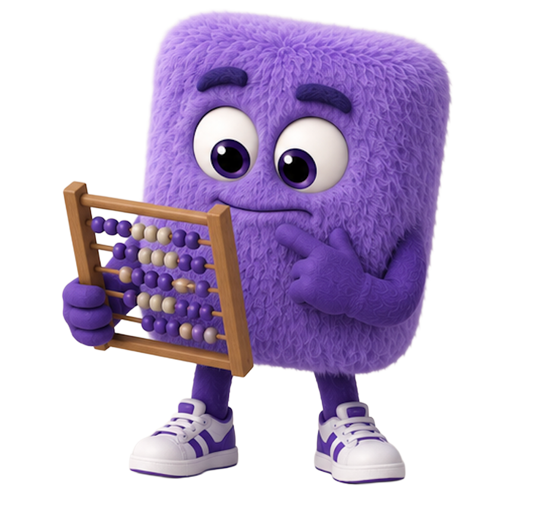

EDGE
Mockup · calculating card, frozen
Discover Your Required Portfolio Return™

EDGE is running your projection…
Projecting your portfolio year by year…
Applying federal + state + Medicare tax math…
Checking your confirmed data points…
⚠ Some data points unavailable — using wide estimates.
On the live page the steps fade in one at a time over about 2.5 seconds and the amber line only shows when the engine reports missing data. The mascot bobs gently the whole time.